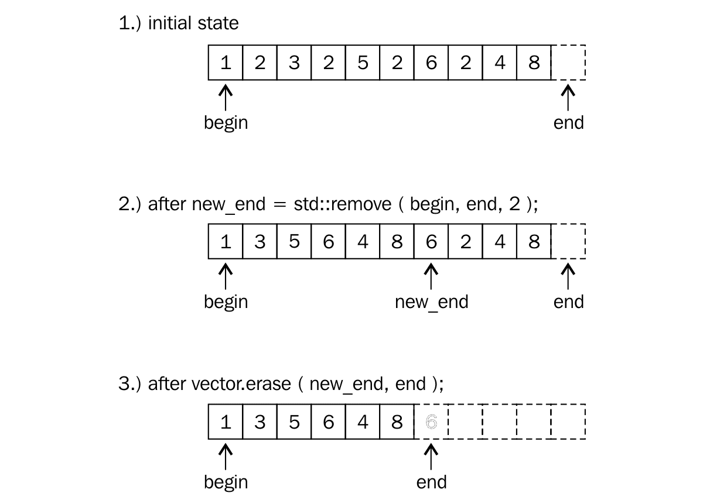
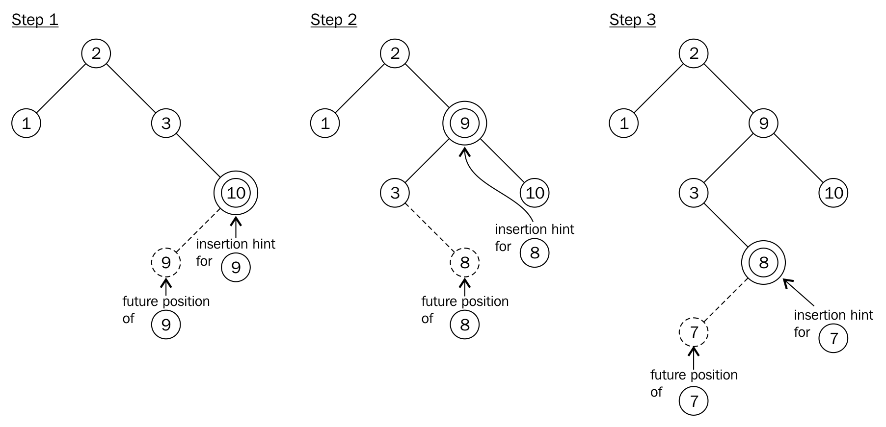

《C++17 STL Cookbook》读书笔记（第 1-2 章）
看到知乎上有人推荐的一本书。
Chapter 1: The New C++17 Features
结构化绑定（Structured Bindings / Unpacking）
std::pair<int, int> map(int x, int y) {
return { x, y };
}
struct City {
int id;
std::string label;
};
int main(int argc, char **argv) {
// std::pair.
const auto [x, y] = (map(10, 20));
std::cout << x << y << std::endl;
// std::tuple.
const auto [age, name] = std::make_tuple<>(27, std::string("YHSPY"));
std::cout << name << age << std::endl;
// struct (with reference).
City city = { 10, "Shanghai" };
const auto &[id, label] = city;
std::cout << id << label << std::endl;
// array.
int arr[]= {1, 2};
const auto [first, second] = arr;
// std::array.
auto [m, n] = std::array<int, 2>({10, 20});
return 0;
}
- 可用于 std::pair \ std::tuple \ struct（只能用于非静态成员）\ array；
- std::tuple 与 C-struct 的结构类似，可以有引用类型的成员；而 std::vector 等则需要使用 std::reference_wrapper 将引用类型包装成对象的形式来存放；
- std::make_tuple 在默认情况下会将 T&& 退化到 T：
For each Ti in Types…, the corresponding type Vi in VTypes… is std::decay<Ti>::type unless application of std::decay results in std::reference_wrapper<X> for some type X, in which case the deduced type is X&.
int main(int argc, char **argv) {
int x {};
int y {};
/**
* template< class T, class... Types >
* constexpr T&& get(tuple<Types...>&& t) noexcept;
*/
// decay.
const auto [v] = std::make_tuple<int&&>(std::move(x));
static_assert(std::is_same_v<decltype(v), const int>);
// no decay.
const auto [c] = std::tuple<int&&>(std::move(y));
static_assert(std::is_same_v<decltype(c), int&&>);
return 0;
}
- 在 “[const|volatile][T][&|&&][identifier]” 形式的表达式中，当其中的 [&|&&] 引用部分存在时，[const|volatile] 将不属于
decltype([identifier])所推断类型的一部分（引用本身无法被 rebind，因此也就没有 constness 的概念，一旦初始化不会再被改变）。区分 const T& 与 T& const。总结来说，具有 copyable 属性的值或对象（普通值 \ 指针等）在传递时都会忽略 top-level constness； - 可以使用
std::tie来实现类似的 Unpacking，其一个优势在于对于不需要的字段可以通过std::ignore的方式将其丢弃。而在 Structured-Bindings 中，则需要为容器中的每一个字段都提供相应的绑定变量； - 结构化绑定也是一种为已存在对象添加的别名，但一个结构化绑定不一定使用引用类型来实现：
const auto [v] = std::tuple<int&>(x);
/**
* 等价于：
* const auto e = std::tuple<int&>(x); // const -> std::tuple;
* auto&& r = std::get<0>(std::move(e)); // auto&& T -> &/&&;
* (introduce v as a name for that which r refers to)
*/
if 与 switch 的语句内初始化（语法糖）
int main(int argc, char **argv) {
if (int x = 10; x == 10) {
std::cout << "Yes!" << std::endl;
}
/*
{
int x = 10;
if (x == 10) {
std::cout << "Yes!" << std::endl;
}
}
*/
switch(int y = 10; y) {
case 10: {
std::cout << "Yes again!" << std::endl;
}
default: {}
}
return 0;
}
应用场景：
- 互斥锁相关，比如 std::lock_guard<std::mutex>。锁设置成功后执行 scope 内语句，退出 scope 时，锁被自动释放；
- 通过 std::weak_ptr::lock 构建的可能处于不可用状态的 std::shared_ptr；
- 以函数参数形式传递返回值的一些历史遗留函数；
新的括号初始化规则
int main(int argc, char **argv) {
// "x" should be the type of the only element inside the brackets in C++17.
auto x {1};
auto y = {1, 2, 3}; // y -> std::initializer_list.
// auto z {1, 2}; // illegal.
std::cout << typeid(x).name() << std::endl;
return 0;
}
基于构造函数的自动模板类型推导（CTAD）
int main(int argc, char **argv) {
std::pair city(1, "Shanghai");
std::tuple scores(4, 3, 2.5);
return 0;
}
使用 std::common_type_t 让编译器选择合适的推导类型。
template <typename T>
struct sum {
T value;
template <typename ...Ts>
sum(Ts&& ...values) : value{(values + ...)} {}
};
template <typename ...Ts>
sum(Ts&& ...ts) -> sum<std::common_type_t<Ts...>>;
int main(int argc, char **argv) {
sum s {1u, 2.0, 3, 4.0f};
std::cout << s.value << std::endl; // 10.
return 0;
}
constexpr-if 的编译时决策
template <typename T>
class Addable {
T val;
public:
Addable(T v) : val{v} {}
template <typename U>
T add(U x) const {
if constexpr (std::is_same_v<T, std::vector<U>>) { // evaluting at compile-time.
auto copy(val);
for (auto &n : copy) {
n += x;
}
return copy;
} else {
return val + x;
}
}
};
int main(int argc, char **argv) {
Addable addable {std::vector<int>{1, 2, 3}};
for (const auto& v : addable.add(100)) {
std::cout << v << std::endl;
}
return 0;
}
- 在 C++17 之前，需要借助 std::enable_if_t<condition, type> 基于 SFINAE 来支持诸如返回值类型选择等过程；
全局变量内联
struct A {
static const inline std::string name = "YHSPY";
};
inline A a;
int main(int argc, char **argv) {
std::cout << a.name << std::endl;
return 0;
}
- 可用于生成 “Header-Only”（不需要先将 .h 与 .cc 编译成 .o 然后再链接的过程）的 C++ 库；
- ODR-use（One Definition Rule）；
- 对于标记为 inline 的全局变量，编译器在链接时会选择使用第一次出现的符号（编译器会假设其他符号与该符号的定义相同）；
折叠表达式
可用于方便地对变长参数模板进行参数解包。
// before C++11:
template<typename ...T> double mul(T ...args); // 入口；
template<typename S, typename ...T> double mul(S arg, T ...args) { return arg * mul<T...>(args...); } // 递归循环体；
template<> double mul() { return 1; } // 边界条件（全特化）；
// after C++17:
template<typename ...Ts> double mulByFold(Ts ...args) {
return (args * ... * 1); // 折叠表达式（二元折叠）；
}
int main(int argc, char **argv) {
std::cout << mul<>(1, 2, 3, 4) << std::endl; // 24.
std::cout << mulByFold<>(1, 2, 3, 4) << std::endl; // 24.
return 0;
}
场景 1：查询给定参数在容器中总共出现的次数：
template <typename R, typename ...Ts>
auto matches(const R& range, Ts ...ts) {
return (std::count(std::begin(range), std::end(range), ts) + ...);
}
int main(int argc, char **argv) {
std::cout << matches(std::vector{1, 2, 2, 3, 4, 5}, 2, 5);
return 0;
}
场景 2：检查顺序的批量元素容器插入操作是否成功：
template <typename T, typename ...Ts>
bool insertAllToSet(T&& set, Ts ...ts) {
return (set.insert(ts).second && ...); // short-circuit.
}
int main(int argc, char **argv) {
std::cout << std::boolalpha << insertAllToSet(std::set<int>{1, 2}, 3, 4, 5);
return 0;
}
场景 3：检查是否所有元素均在给定的范围内：
template <typename T, typename ...Ts>
bool within(T min, T max, Ts ...ts) {
return ((min <= ts && ts <= max) && ...);
}
int main(int argc, char **argv) {
std::cout << std::boolalpha << within(1, 10, 1.3, 2, 3);
return 0;
}
场景 4：批量向容器插入元素：
template <typename T, typename ...Ts>
void insertAllToVector(std::vector<T>& vec, Ts ...ts) {
(vec.push_back(ts), ...); // comma expression.
}
int main(int argc, char **argv) {
std::vector<int> vec {};
insertAllToVector(vec, 1, 2, 3);
std::cout << vec.size() << std::endl;
return 0;
}
Chapter 2: STL Containers
std::vector使用了堆内存，以提供可随时增长容器大小的特性；std::unordered_set和std::unordered_set基于 Hash Table 实现；- 容器适配器：
std::stack\std::queue以及std::priority_queue；
std::vector 与 Erase-remove 惯用法
- 从线性容器（std::vector \ std::array \ std::string）中删除元素时采用的常用模式；
- 应用在 std::array 时，注意不支持对容器大小的更改；

int main(int argc, char **argv) {
std::vector v {1, 2, 3, 2, 5, 2, 6, 2, 4, 8};
const auto newEnd (std::remove(std::begin(v),std::end(v), 2)); // remove.
v.erase(newEnd, end(v)); // erase.
// predicate version:
const auto odd ([](int i) { return i % 2 != 0; });
v.erase(std::remove_if(std::begin(v), std::end(v), odd), std::end(v)); // remove && erase.
v.shrink_to_fit(); // shrink capacity of the container.
for (const auto& i : v) { std::cout << i << std::endl; }
return 0;
}
从未排序的 std::vector 中快速删除元素
- 基本思路：用容器中的最后一个元素替换待删除元素；然后将最后一个元素移除（省去了需要大量移动元素的开销，但只适合无序容器）。
// index version:
template <typename T>
void quickRemoveAt(std::vector<T>& v, std::size_t idx) {
if (idx < v.size()) {
v[idx] = std::move(v.back()); // use std::move rather than copy.
v.pop_back(); // discard the last item.
}
}
// iterator version:
template <typename T>
void quickRemoveAt(std::vector<T>& v, typename std::vector<T>::iterator it) {
if (it != std::end(v)) {
*it = std::move(v.back());
v.pop_back();
}
}
int main(int argc, char **argv) {
std::vector vec {1, 2, 3};
quickRemoveAt(vec, 1);
for (const auto& v : vec) {
std::cout << v << std::endl;
}
return 0;
}
以最快 / 最安全的方式访问 std::vector / std::array
- 下标运算符 “[]” 不会进行 bound-check，相反 at() 则会进行 bound-check（在某些情况下也可能会产生性能损耗）；
- 可以通过捕获 std::out_of_range 异常来处理容器元素访问 out-of-bound 的情况；
保持 std::vector / std::array 以有序的方式插入元素
void insertSorted(std::vector<int>& v, int num) {
// find the first element which is the greater or equal than the given one.
const auto insertPos(std::lower_bound(std::begin(v), std::end(v), num));
// insert the new element just behind this one.
v.insert(insertPos, num);
}
int main(int argc, char **argv) {
std::vector vec {1, 2, 3, 4, 5, 6};
insertSorted(vec, 2);
assert(true == std::is_sorted(std::begin(vec), std::end(vec)));
return 0;
}
高效和选择性地插入元素到 std::map / std::unordered_map
- 主要利用 C++17 新加入的
std::map::try_emplace。该方法在对应 Key 存在时不会尝试重新构建对象（在某种程度上可以节省开销）；
int main(int argc, char **argv) {
std::map<int, std::string> m { { 1, "YHSPY" }, { 2, "SKY" } };
auto [iter, success] = m.try_emplace(2, "SUN");
if (!success) {
iter->second = "SUM";
}
for (const auto& [key, value] : m) {
std::cout << value << std::endl;
}
return 0;
}
std::map::insert 的新插入提示语义（性能优化）
- 正常情况下，在 std::map 中查询/插入一个元素的时间复杂度为 ***O(log(n))***；在 hint 的帮助下，可以优化到 ***O(1)***；
- 在 C++11 之前，插入值需要位于 hint 的后面；在 C++11 之后，插入值要尽可能接近 hint，并位于其前面。（*Inserts value in the position as close as possible, just prior(since C++11), to hint.*）
- 使用“红黑树”实现的 std::map 在每次插入新元素时都会进行 re-balancing 的过程，该过程会牺牲一定的性能。而借助 hint 可以一定程度减轻此过程的影响（Amortized Complexity）。

int main(int argc, char **argv) {
std::map<std::string, size_t> m { { "b", 1 }, { "c", 2 }, { "d", 3 } };
auto insertIt(std::end(m));
for (const auto &s : { "z", "y", "x", "w" }) {
// hint (point to the existing element, which is greater than the element to be inserted).
insertIt = m.insert(insertIt, { s, 1 });
}
return 0;
}
高效地修改 std::map 中元素的 Key
- std::map 中的 Key 部分是隐式 const 的，即无法在元素被插入后再进行修改。在 C++17 之前，只能够通过“先移除，再插入”的方式来间接修改；
- std::map::extract 不会移动或者拷贝 std::map 中的元素，仅涉及修改对应元素的内部指针。（可能会有 re-balancing 的过程被执行）。
- std::map::extract 返回的“节点”可以在其他同类型的容器中相互使用，但需要保证节点的 Key、Value 以及分配器类型（堆\栈）均相同；
int main(int argc, char **argv) {
std::map<int, std::string> m {
{ 1, "Mario" }, { 2, "Luigi" }
};
auto a (m.extract(1)); // extract the target node.
auto b (m.extract(2));
if (!a.empty() && !b.empty()) {
std::swap(a.key(), b.key()); // get nonconst access to the key.
m.insert(std::move(a)); // no "move" or "copy", just adjust the internal pointer of each "node_type";
m.insert(std::move(b));
for (const auto& [key, value] : m) {
std::cout << key << value << std::endl;
}
}
return 0;
}
在 std::unordered_map 中使用自定义类型做 Key
struct Name {
std::string val;
};
bool operator==(const Name& x, const Name& y) {
return x.val == y.val;
}
template<> struct std::hash<Name> { // specialization for std::hash<Name>;
size_t operator()(const Name& ins) const {
return std::hash<std::string>()(ins.val);
}
};
int main(int argc, char **argv) {
std::unordered_map<Name, int> um {
{{"Alice"}, 1}, {{"YHSPY"}, 2}
};
return 0;
}
使用 std::set 过滤重复的用户输入并排序
int main(int argc, char **argv) {
std::set<std::string> s;
std::istream_iterator<std::string> it { std::cin };
std::istream_iterator<std::string> end;
std::copy(it, end, std::inserter(s, s.end()));
return 0;
}
使用 std::priority_queue 编写 TODO 应用
- std::priority_queue 不支持基于 std::initializer_list 的构造函数；
- std::pair 的比较规则：If lhs.first<rhs.first, returns true. Otherwise, if rhs.first<lhs.first, returns false. Otherwise, if lhs.second<rhs.second, returns true. Otherwise, returns false.
int main(int argc, char **argv) {
using tItem = std::pair<int, std::string>;
std::priority_queue<tItem> todo;
auto il = {
tItem{0, "read comics"},
tItem{2, "do homework"},
tItem{1, "dishes"},
};
for (const auto& p : il) {
todo.push(p);
}
while (!todo.empty()) {
std::cout << todo.top().first << ": " << todo.top().second << std::endl;
todo.pop();
}
return 0;
}